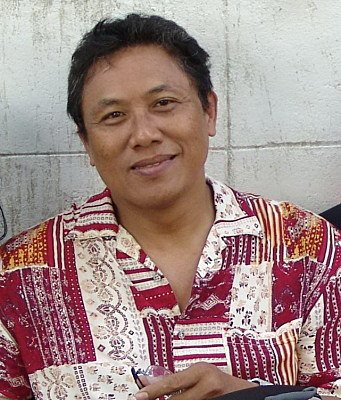

Bapak O'ong Maryono

It is with great sadness and deep regret that we report on the passing of Bapak O'ong Maryono.
Bapak O'ong Maryono was truly a man of many talents: noted scholar, acclaimed author, revered trainer, and exceptional fighter. Born on 28 July, 1953, Pak O'ong began training in Pencak Silat from the age of nine, learning traditional styles from Madura and Bawean, as well as practising Kuntao. His talents developed quickly, and from 1973, when Pencak Silat sports competitions began, he embarked on a career as a fighter, placing first at the Bondowoso Regency level.
Moving to Jakarta to further develop, Pak O'ong trained tirelessly, learning foreign arts like Judo, Karate and Tae Kwon Do. However, his connection with Silat remained, and he joined the Keluarga Pencak Silat Nusantara (KPS Nusantara), where he trained under the guidance of Bapak Mohamad Hadimulyo and Bapak Bambang Anggono.
Pak O'ong's skill as a fighter was exceptional. During his career as an athlete, he won 11 gold medals at national and international level, including the first and second International Pencak Silat Men's Invitation (the tournament later became the World Pencak Silat Championships), two National Championships, and the 14th South East Asia Games, the first games at which Silat was an event. Pak O'ong competed in both Men's 80-85kg and in the 'free-weight', a category open to any fighter over 65kg.
His achievements in Pencak Silat as a fighter would be more than enough as a legacy, but Pak O'ong was never a man to rest on his laurels. As was common among pesilat of his school, he sought to test himself against other disciplines, notably Tae Kwon Do, in which he dominated the heavy-weight division as national champion from 1982 to 1985.
Beyond his record as one of Silat's most decorated fighters, Pak O'ong was an innovative and inspirational trainer. Retiring as an athlete at the end of the eighties, Pak O'ong remained a trainer for KPS Nusantara, and as a result of his skills and expertise, was sought out by other countries to train their teams. He took charge of Brunei Darussalam's team for a year, before moving to Amsterdam in 1990 to help develop Pencak Silat there. In 1993, he returned to Jakarta to serve as Chief National Trainer and Managing Director of his school, KPS Nusantara, before moving to the Philippines, Bangkok, and, latterly, Italy, to develop both his school and the national sport there.
It was at the end of his time in Amsterdam that Pak O'ong was inspired to begin what may be his most notable endeavour. Disappointed at the dearth of literature and scholarship about Silat, whether from Indonesia or abroad, Pak O'ong began working on a comprehensive book on the role and history of Pencak Silat in Indonesia. He spent the next five years researching, interviewing and compiling from hundreds of sources, many through interviews, the definitive work on Pencak Silat, and indeed, on martial arts, in the context of Indonesian history and culture.
Published in 1998 and translated into English in 2002, the book, Pencak Silat Merentang Waktu (English ed. Pencak Silat in the Indonesian Archipelago), was a notable success, garnering praise and recognition from the Director-General of Culture in Indonesia, and the École française d'Extrême-Orient, and remains the main academic reference work for Pencak Silat. More than just a history of the art, Pak O'ong described the social and political aspects of Silat, and was not afraid to voice his opinions on what he saw as the challenges facing the traditional art in the modern world. Indeed, many of the recommendations and conclusions he drew were instrumental in shaping the development of Silat over the last decade. The book is an invaluable reference for academics and practitioners alike.
Bapak O'ong Maryono, author and pesilat, passed away on 20 March 2013. He is survived by his wife, Rosalia Sciortino, and three children from a previous marriage. His passing is a great loss to Pencak Silat, and he will be badly missed by the global Silat community.